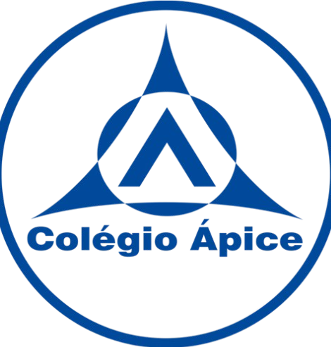

Minhas Formações.

Colégio Ápice
2012 - 2023Realizei meu Ensino Fundamental e Ensino Médio no Colégio Ápice, onde passei a maior parte da minha vida escolar. Foi uma época muito boa, com amizades que levo até hoje, que foram grandes incentivos para a escolha da minha área de formação.
Serra, ES
UNINTER
2025 - atualAtualmente estou no segundo ano do curso de Ciências da Computação na UNINTER, curso que me possibilitou aprender muito sobre tecnologias e programaçao, o que me permitiu encontrar o caminho em que eu planejo seguir dentro da área.
Online